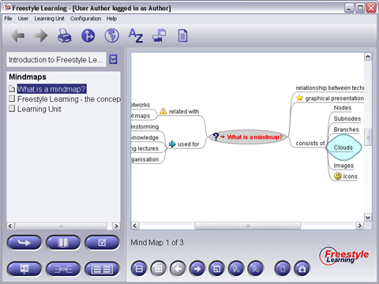

With the Mind Maps you can view learning content in a graphical style. This View is appropriate for getting a glance of the learning content, however you can also use it to explore more detailed knowledge. Selecting any non-folder element from the structure tree will display the corresponding Mind Map in the Content Panel. These documents may contain nodes with links which are indicated by small red arrows. Link targets can be web urls but also other Freestyle Learning Elements. You even can have more than one target per link. When you click on a hyperlink which provides more than one target, a dialog will be shown from which you can select the link to be followed. Use the Back button from the toolbar to return to the element you started from.

The Interaction Panel contains Default Interaction Buttons: the Default Navigation Buttons and the Split Screen Buttons which allow to navigate back and forth through the Structure Tree and view two Text Elements at the same time. Additionally, there are buttons for zooming in and out of the Mind Map, and for searching for text within the Mind Map. The search starts at the node currently selected and and is limited to this node and its children.
View Specific Interaktion Buttons
|
Zoom in | Zoom in into Minmaps Model |
|
Zoom out | Zoom out from Mindmaps Model |
|
Search | Find within Mindmaps, starting from current node |
|
Find Next | Find next if there are more hits |
Hint: By clicking the nodes (one click for selecting it, then one more click) you can show or hide their branches. You can see if there is hidden content behind a node by looking at the style: If the node is surrounded by a line, then you can click it to make hidden content visible.
Back to Main Help Page